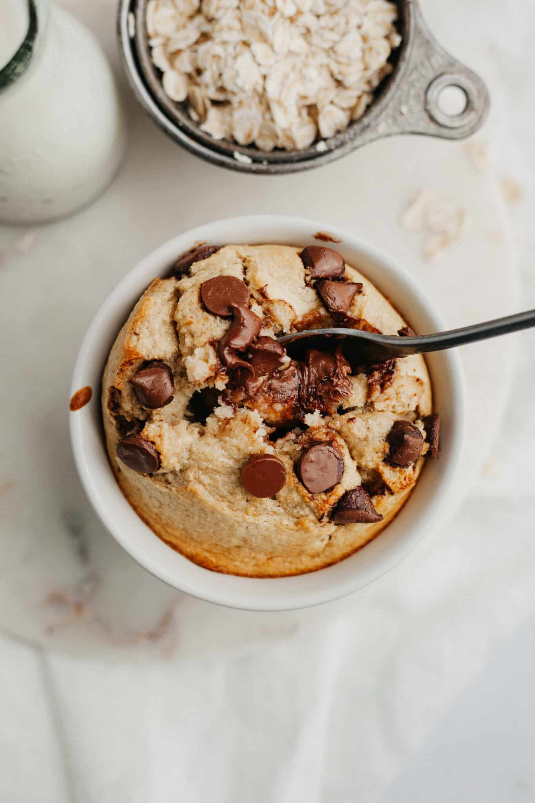

home
baked oatmeal

this recipe is protein-packed, uses whole ingredients, and feels like you're eating cake for breakfast. blending the ingredients together makes a world of difference! the following is a great base recipe, but feel free to throw in any mix-ins or toppings you desire.
ingredients
- 1/2 cup egg whites
- 1 cup rolled oats
- 2 scoops vanilla protein powder
- 1 medium ripe banana
- optional: 2 tbsp PBfit powder
- optional: chocolate chips, nuts, or other preferred toppings
steps
- preheat oven to 350 degrees F
- combine all ingredients in a blender and blend until smooth
- pour batter into a baking dish or individual ramakins and stir in desired mix-ins
- bake for 15-20 minutes
- allow to cool for at least 30-45 minutes